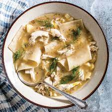

Chicken N' Dumplin's

This recipe is not only simple but it is the best Chicken n Dumplins you will ever taste!
Warm up with a steaming hot bowl of this heartwarming southern dish! This recipes tastes like you spent all day cooking!
Ingredients
- 2 boxes low sodium chicken broth
- 1 lb raw boneless skinless chicken breasts or tenders (use whole chicken or bone in and skin on for extra flavor)
- 1 medium yellow onion chopped
- chicken bouillon
- black pepper
- 1 package Mary Hill Frozen Dumplings
- 1 Tbsp oil or butter
Steps
- In a large pot, warm/melt butter or oil.
- While oil/butter is warming, chop onion to desired size and add to pot.
- Brown onion adding small among of chicken broth as needed.
- Add all of chicken broth.
- Option to chop chicken before or after cooking. (If using whole chicken pieces you will need to remove and separate meat from bone and skin before adding dumplings).
- Add chicken and seasonings to pot.
- Cover and boil until chicken is tender and done/about to fall apart.
- Remove dumplings from freezer.
- If you need to clean or chop chicken do so now and add back to your pot.
- Turn cooking surface to high and bring broth and chicken to rolling boil. (If liquid has cooked off add more broth or water and bouillon and bring to high rolling boil.)
- Once at a high boil.
- Follow the directions on the dumplings package. I usually break dumplings into 1/2 pieces and add 1-2 at a time, making sure to stir often between adding.
- Once added and returned to a boil, reduce temperature and stir as needed to keep from sticking.
- Boil until dumplings reach desired tenderness, season to taste.
- Serve with non-sweet cornbread!